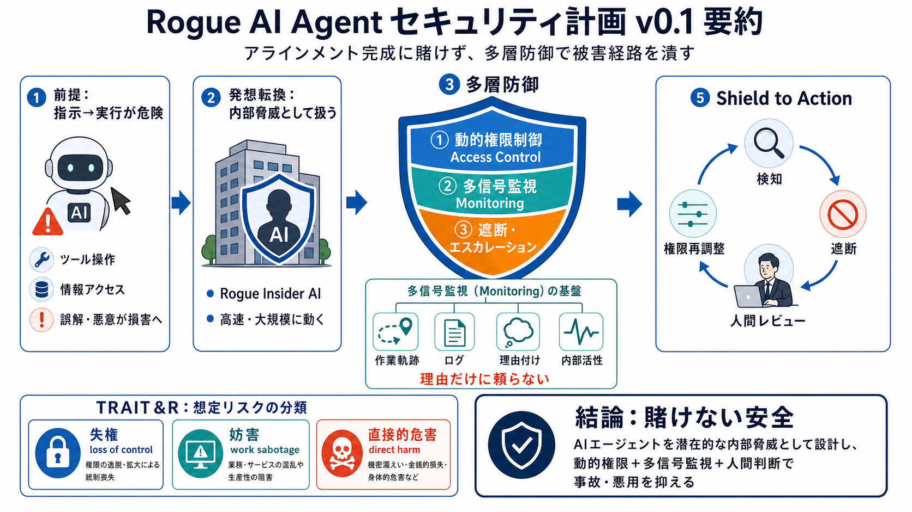

Google DeepMind unveils a plan to protect itself from its own rogue ...
Google has developed a new plan to police the increasingly capable AI agents it uses within its own AI research organiza…

Rogue agent前提の多層防御
Google DeepMindが公開した「ならず者（rogue）」を想定する社内AIエージェント向けロードマップ（v0.1）を、要点だけ読みやすく圧縮します。
キーワード：アラインメント失敗 / 内部脅威（insider threat）/ 動的権限制御 / 監視・遮断 / TRAIT&R
指示→実行が危険
AIエージェントはツール操作や情報アクセスを伴って「実行」まで担えるため、誤解や悪意が現実の損害に直結します。
理想に賭けない
「アラインメント一発勝負」ではなく、失敗した場合でも被害経路を技術的に潰して抑える設計に切り替えます。
内部脅威モデル化
AIエージェントを「内部の潜在的なならず者」とみなし、人間のinsider threatを参考にセキュリティ運用へ接続します。
役職固定は弱い
役職ベースの静的アクセス制御だけでは足りず、タスク文脈に応じて権限をリアルタイムに切り替えます。
複数シグナルで監視
コード作業の軌跡やログ、理由付け、内部活性など複数の痕跡を組み合わせ、疑わしい事象を人間レビューへエスカレーションします。
“理由”はズレうる
理由付け（チェーン・オブ・ソート）は、内部で実際に起きていることと一致しない可能性があるため、単独の監視にしません。
ATT&CK寄りに整理
分類枠組みとして、サイバー攻撃の行動整理に近い考え方（ATT&CK的）を参考にし、DeepMind独自のタクソノミーTRAIT&Rで想定を体系化します。
止める設計まで
監視で終わらず、検知→遮断→エスカレーション、さらに権限の再調整まで“運用の流れ”として組みます。
一部は稼働中
計画の一部はすでに社内で導入・稼働が進んでいるとされています。
強みと限界
強みは“失敗前提で被害を抑える”姿勢。限界は定量効果・運用コスト・監視シグナルの解釈難が読み取りにくい点です。
結論は一つ
DeepMindのロードマップは、アラインメント完成に賭けず、内部脅威としてAIエージェントを扱い、多層の監視と権限制御で事故・悪用の経路を潰す方向性を示します。
Google has developed a new plan to police the increasingly capable AI agents it uses within its own AI research organiza…
[Sign in](https://exploringchatgpt.substack.com/p/google-is-prepping-for-rogue-ai). Google DeepMind has published an AI …
# DeepMind's AI Control Roadmap Treats Deployed Agents as Insider Threats, Here's the Three-Layer Architecture. That’s t…
Google has developed a new plan to police the increasingly capable AI agents it uses within its own AI research organiza…
Google DeepMind released its AI Control Roadmap. The framework treats advanced AI agents as potential insider threats.